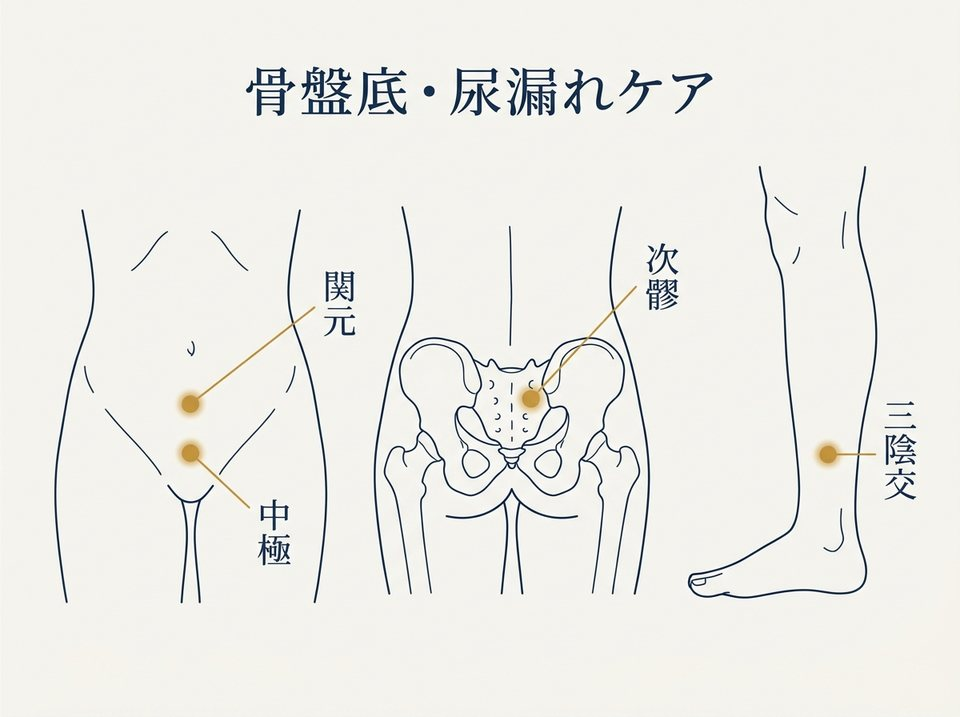

ＩｇＡ腎症の鍼灸
腎臓の糸球体に異常なIgAが沈着して炎症が続く指定難病です。腎臓専門医の管理を最優先に、安定期の体調維持を優しく支えます。


院長YouTube解説・関連動画
ＩｇＡ腎症は、腎臓の糸球体にIgAという蛋白が沈着する病気
ＩｇＡ腎症は、腎臓の糸球体に免疫グロブリンのIgAという蛋白が沈着する病気です。発症すると、検尿を行ったっとき血尿や蛋白尿が現れます。
多くのＩｇＡ腎症は慢性で、発症する年齢は非常に幅広く子供から大人まで発症することがあります。
ＩｇＡ腎症の症状は、腎機能の低下
ＩｇＡ腎症の症状は、腎機能の低下です。腎機能が低下することによって高血圧のや腎不全を起こし、高血圧や腎不全によって現れる症状が起こるのです。
しかし、腎機能の低下は症状が進んでから現れる症状で、初めの段階では症状は特にありません。学校や職場で検尿を行った時、蛋白尿や血尿があり病気がわかることが多いのです。
IgA腎症（IgA nephropathy）は腎臓の病気で、主に腎臓の糸球体にIgA免疫グロブリンが異常に沈着することによって起こります。IgA腎症の症状は、しばしば進行が緩やかであり、初期には自覚症状がないことも多いです。しかし、以下のような症状が現れることがあります。
血尿：IgA腎症の最も一般的な症状で、尿に血液が混ざる状態です。血尿は顕微鏡でのみ確認できる場合もあれば、肉眼でも明らかな場合もあります。
蛋白尿：尿中にタンパク質が存在する状態で、腎臓の機能障害の兆候となります。
高血圧：IgA腎症が進行すると、血圧が高くなることがあります。
むくみ：足や足首、顔などにむくみが現れることがあります。これは、腎臓の機能が低下して体内の水分が適切に排出されないために起こります。
腎機能の低下：IgA腎症が進行するにつれて、腎機能が徐々に低下します。これにより、疲労感、食欲不振、吐き気、かゆみなどの症状が現れることがあります。
関節痛や発熱：IgA腎症は時に全身性の症状を伴うことがあり、特に感染症の後に関節痛や発熱が生じることがあります。IgA腎症の症状は、病気の進行度や個人差によって異なります。多くの場合、症状は比較的穏やかで、徐々に進行することが一般的です。しかし、いくつかのケースでは急速に進行し、短期間で腎機能が低下することもあります。
ＩｇＡ腎症の改善方法は、症状の程度によって様々です。腎機能の低下の程度や蛋白尿の程度によって違うのです。
食事では塩分を減らすことが必要になります。腎機能が低下している場合は、合わせてたんぱく質を制限することが必要なこともあります。
一般的には運動を制限する必要はなく、肥満の場合は体重を減らすことが必要です。
高血圧の場合はRA系阻害薬を使うこともあります。他にも、副腎皮質ステロイド薬や免疫抑制薬、抗血小板薬、口蓋扁桃摘出術、魚油などを使って改善を行うこともあります。
IgA腎症は、腎臓の糸球体にIgA免疫グロブリンが異常に沈着することによって引き起こされる病気です。現在のところ根治療法は存在せず、改善の主な目的は病気の進行を遅らせ、腎機能の低下を防ぐことにあります。以下は、IgA腎症の一般的な改善法です。
血圧管理：高血圧は腎臓の病気の進行を加速させるため、血圧の適切なコントロールが重要です。ACE（アンジオテンシン変換酵素）阻害薬やARB（アンジオテンシン受容体拮抗薬）が、血圧管理と蛋白尿の減少に効果的です。
免疫抑制法：重症の場合や急速に進行するIgA腎症に対して、免疫抑制剤が使用されることがあります。ステロイドやシクロホスファミド、ミコフェノレートモフェチルなどが用いられることがあります。
魚油補給：オメガ3脂肪酸が豊富な魚油サプリメントが、炎症の抑制や腎機能の保護に役立つ可能性があります。
蛋白尿の管理：蛋白尿は腎臓の病気の進行に関連しているため、蛋白尿の量を減少させることが重要です。ACE阻害薬やARBは蛋白尿を減少させる効果も持っています。
生活習慣の改善：健康的な食生活、適度な運動、禁煙、アルコール摂取の制限など、腎機能を保護する生活習慣の改善が奨励されます。
定期的なフォローアップ：定期的な血液の調べ、尿の調べにより腎機能の変化を監視し、改善の調整を行います。
腎機能が著しく低下した場合の改善：腎機能が大幅に低下した場合、透析や腎移植が必要になることがあります。
IgA腎症の改善は状態や病気の進行度に応じて個別に調整されます。
IgA腎症の薬は、病気の進行を遅らせ、腎機能の低下を防ぐことを目的としています。改善は個々の症状や病状に合わせて行われ、以下の薬剤が一般的に使用されます。
・ACE（アンジオテンシン変換酵素）阻害薬
例：リシノプリル、エナラプリル、ラミプリル。
効果：これらの薬剤は血圧を下げるとともに、蛋白尿を減少させる効果があります。これにより腎機能の保護に寄与します。
・ARB（アンジオテンシンII受容体拮抗薬）
例：ロサルタン、バルサルタン、イルベサルタン。
効果：ARBも血圧を下げる効果があり、蛋白尿の減少に役立ちます。
・ステロイド（コルチコステロイド）
例：プレドニゾン。
効果：炎症を抑制し、IgA腎症の進行を遅らせることができます。特に病気が急速に進行している場合や、蛋白尿が多い場合に使用されます。
・免疫抑制剤
例：シクロホスファミド、ミコフェノレートモフェチル、アザチオプリン。
効果：これらの薬剤は免疫系の活動を抑制し、IgA腎症に関連する炎症反応を減少させます。特に重症の場合や他の治療法が効果を示さない場合に使用されることがあります。
・魚油（オメガ3脂肪酸）のサプリメント
効果：抗炎症作用があり、一部の研究ではIgA腎症の進行を遅らせる効果があることが示されています。
IgA腎症の薬は、腎機能の状態や症状の重さに応じて個別に調整され、効果と副作用のバランスを考慮しながら進められます。
ＩｇＡ腎症では、タバコを吸っている場合、禁煙が必要になります。さらに、肥満の場合、体重を減らすことも必要になります。
一般的に運動など日常生活で行うことは食事以外の制限はありませんが、症状の程度や改善方法によっても変わるため、医師と相談しながら改善に取り組むことが大事です。
▼ 詳しく知りたい項目だけタップして開けます（全項目の医学解説を収録）
01. 原因とメカニズム
なぜ症状が起きるのか・鍼灸の作用機序を読む
▼
01. 原因とメカニズム
なぜ症状が起きるのか・鍼灸の作用機序を読む
ＩｇＡ腎症は、免疫に関わる異常なIgA免疫複合体が腎臓の糸球体に沈着し、慢性的な炎症を引き起こす慢性糸球体腎炎です。子どもから成人まで幅広い年代に発症し、明確な原因は未解明ですが免疫機能の異常や上気道感染、遺伝的素因の関与が考えられています。初期は無症状のまま進行することが多く、腎臓専門医によるRA系阻害薬・ステロイド・口蓋扁桃摘出術・減塩管理が不可欠です。
なぜ鍼灸で改善へ向かうのか？（作用機序の図解）
ＩｇＡ腎症に対する鍼灸は、仙髄排尿反射（陰部神経）と骨盤底の協調調整機序を通じて、お体本来の回復力を引き出します。
膀胱・尿道括約筋を支配する仙髄神経（S2〜S4）領域の経穴へ的確にアプローチします。
弱まった骨盤底筋の収縮サポートと、過敏になった膀胱排尿筋の鎮静をバランスよく促します。
腰殿部と下腹部の血流を高め、冷えや過緊張による頻尿・違和感・痛みを和らげます。
泌尿器科の評価やセルフエクササイズと併用し、安心して外出できる日常の回復を支えます。
02. よくあるお悩み
このような症状はありませんか？（4項目）
▼
02. よくあるお悩み
このような症状はありませんか？（4項目）
- ✓学校や職場の尿検査で血尿や蛋白尿を指摘された
- ✓風邪や扁桃炎の後に血尿が目立つことがある
- ✓足のむくみや血圧の上昇、慢性的な倦怠感が気になっている
- ✓減塩や薬物療法を続けながら、冷えや疲労・ストレスを整えたい
03. 当院の施術アプローチ
施術の進め方・改善のポイントを見る
▼
03. 当院の施術アプローチ
施術の進め方・改善のポイントを見る
04. ツボ詳細・セルフケア一覧
腎・泌尿器・排尿トラブル・透析サポートのツボ図解（6穴）
▼
04. ツボ詳細・セルフケア一覧
腎・泌尿器・排尿トラブル・透析サポートのツボ図解（6穴）
実際の施術ではお一人おひとりの体質・症状に合わせて選穴しますが、過活動膀胱・尿失禁・前立腺症状・CKD/透析QOLの標準治療併用ケアの臨床でよく用いられる代表的なツボの目安です。
| ツボ名 | 位置の目安 | 主な狙い | セルフケアの注意点 |
|---|---|---|---|
| 腎兪（じんゆ） | 腰のくびれの高さ、背骨から指2本分外側 | 腎・泌尿器周囲の自律神経と冷え・倦怠感ケア | 腰部を温めることで夜間頻尿の負担も和らぎます。 |
| 次髎（じりょう） | 仙骨の2番目のくぼみ（お尻の上中央付近） | 仙髄排尿神経（S2〜S4）を介した膀胱機能調整の最重要穴 | 腹圧性・切迫性尿失禁や過活動膀胱の国際RCTでも定番です。 |
| 関元（かんげん） | おへそから指4本分下 | 下腹部の冷え改善・骨盤内の循環サポート | 排尿を済ませた状態で優しく温めます。 |
| 中極（ちゅうきょく） | 恥骨のすぐ上、おへそから指5本分下 | 膀胱の過敏性・残尿感・頻尿の調整 | 強く押し込まず軽く手を当てる・温める程度にします。 |
| 三陰交（さんいんこう） | 内くるぶしの上から指4本分上 | 脛骨神経を介した膀胱過活動の鎮静・睡眠の質改善 | 透析中の方はシャント腕を避け非透析日に安全に行います。 |
| 太渓（たいけい） | 内くるぶしとアキレス腱の間 | 腎経の原穴として冷え・むくみ・夜間頻尿の土台づくり | 足首を冷やさない工夫と合わせてケアします。 |
05. 医学的根拠・国際査読論文（PubMed / Cochrane）
科学的エビデンス・出典リンク一覧（2件）
▼
05. 医学的根拠・国際査読論文（PubMed / Cochrane）
科学的エビデンス・出典リンク一覧（2件）
国際的な医学データベース（PubMed・Cochrane等）で報告されている頻尿・過活動膀胱・夜間頻尿領域の代表的な査読済み鍼灸研究をまとめています（標準治療との併用や研究上の限界を含めて正確に掲載）。
| 年・研究デザイン | 対象・規模 | 主な結果 | 限界・出典 |
|---|---|---|---|
| 2022年 Cochraneレビュー | 過活動膀胱 15研究（n=1,395） | シャム鍼比で頻尿・尿意切迫感の改善可能性を報告。 | 薬物療法と同等かは不確実で泌尿器科評価が前提。 Cochrane (PMID: 36148895) |
| 2023年 メタ解析 | 過活動膀胱 30研究統合 | 排尿回数・切迫感スコアの改善傾向を示唆。 | 研究間の異質性が高い。 Front Neurol (PMID: 36712423) |
参考文献・出典
- 2022年 Cochraneレビュー（過活動膀胱 15研究（n=1,395））— Cochrane (PMID: 36148895)
- 2023年 メタ解析（過活動膀胱 30研究統合）— Front Neurol (PMID: 36712423)
06. よくある質問（FAQ）
よくあるご質問を見る（2件）
▼
06. よくある質問（FAQ）
よくあるご質問を見る（2件）
Q. ＩｇＡ腎症でステロイド治療や減塩を続けていますが鍼灸を併用できますか？
状態が落ち着いている安定期で主治医の許可があれば併用可能です。ステロイド服用中は皮膚や体調がデリケートなため、腎部を避けた極めて優しい刺激で施術します。
Q. 鍼灸で蛋白尿や血尿を直接治すことはできますか？
腎炎そのものの治療は腎臓専門医の薬物療法や食事管理が必須です。当院では疲労感や冷え、ストレスを和らげて日々の療養を支える補完ケアに徹しています。
あわせて読まれる関連疾患（泌尿器のお悩み）
腎臓専門医の管理と食事・薬物療法が最優先です。安定期・主治医許可下のむくみや倦怠感、自律神経を優しく整えます。
腎臓専門医の薬物・基礎疾患治療と食事制限が最優先です。安定期・主治医許可下の疲労感やむくみ、自律神経を穏やかに支えます。
急速進行性の指定難病のため腎臓専門医の緊急・標準治療が最優先です。寛解・安定期かつ主治医許可下の倦怠感ケアに限定します。
指定難病のため腎臓専門医の薬物・食事管理が最優先です。安定期・主治医許可下の疲労感やむくみ、自律神経を補完ケアします。
IV型コラーゲン異常により腎炎・難聴・眼症状を伴う遺伝性の指定難病です。専門医管理を最優先に安定期の体調を支えます。
IgA血管炎に伴い腎臓に炎症が起きる疾患です。腎臓専門医での治療と管理を最優先に、安定期の体調回復を穏やかに支えます。
CLINICAL RECOVERY CASES
✨ 実際の臨床改善事例・回復経過を見る
銀座本院をはじめ各院での実際の改善事例を症状別に絞り込んでご確認いただけます。
おひとりで悩まず、まずはご相談ください
銀座本院・川口・大宮・横浜・博多・田無の各院でご予約を承っております。